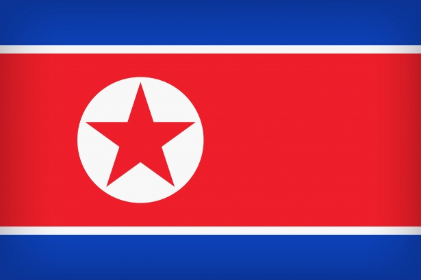
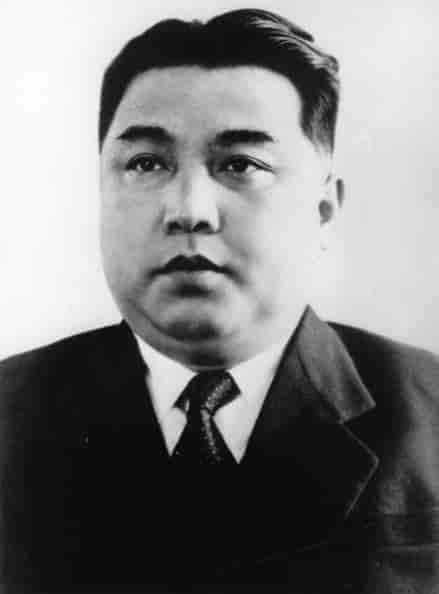

North Korea owes Sweden money

The great debt
According to a government-owned media source named svt whitch is short for "Sveriges telivition" the debt is close to 2.7 billion kr whitch is equivillant to 225 532 516,46€ at the time of writing this (2023-09-18). The debt is from when North Korea placed a massive order of 1.000 Volvo 144 cars and a great bouquet of other Swedish products. The year was 1973 and Sweden had hopes to earn some money after the end of the korea war whitch resulted in Sweden being the first western country to announce North Korea as "People's Republic of North Korea". The year after that it was time for buisness, that was the plan at least.
